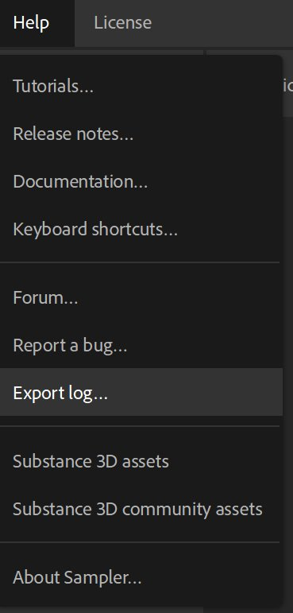
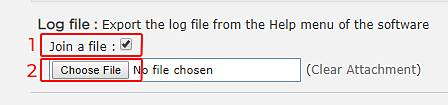

When you need support regarding Substance 3D Sampler, it is always good to share your log file as it gives context about your computer configuration.
The log file can be directly exported from Substance3D Sampler by going to the Help menu and selecting the Export log file item.

If you are unable to launch Substance 3D Sampler, you can retrieve the log file manually by going in the following folder:
Adobe version:
Substance3D version:
On Windows "Appdata" is a hidden folder.
On Mac OS "library" is a hidden folder.
On Linux ".local" is a hidden folder.
When asking for support on the forum, a log file is required. Here is how to attach a log file to your message:
